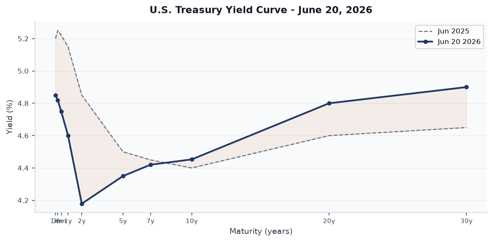
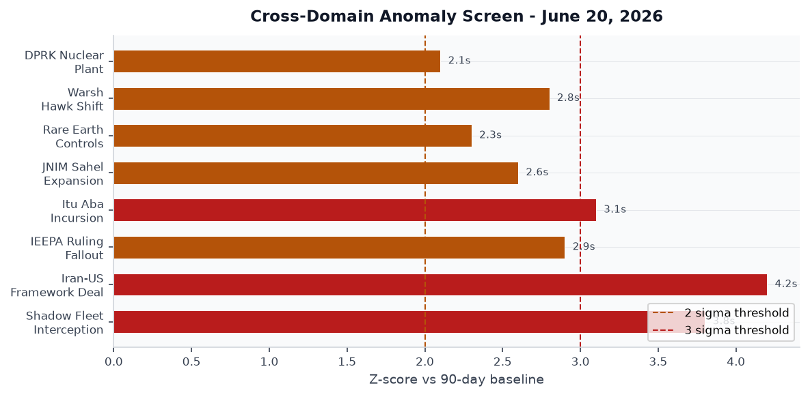
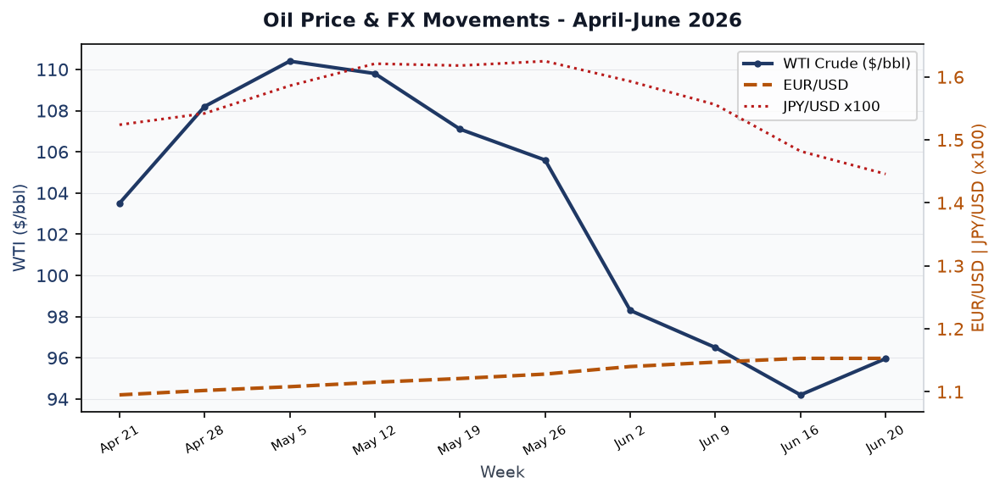
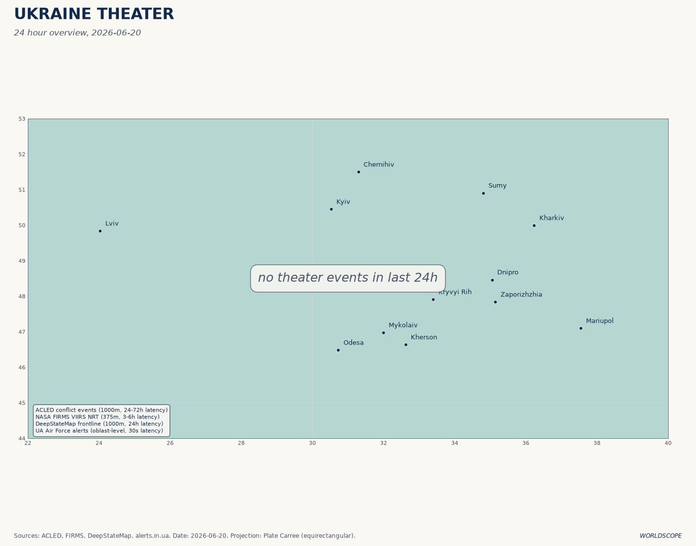
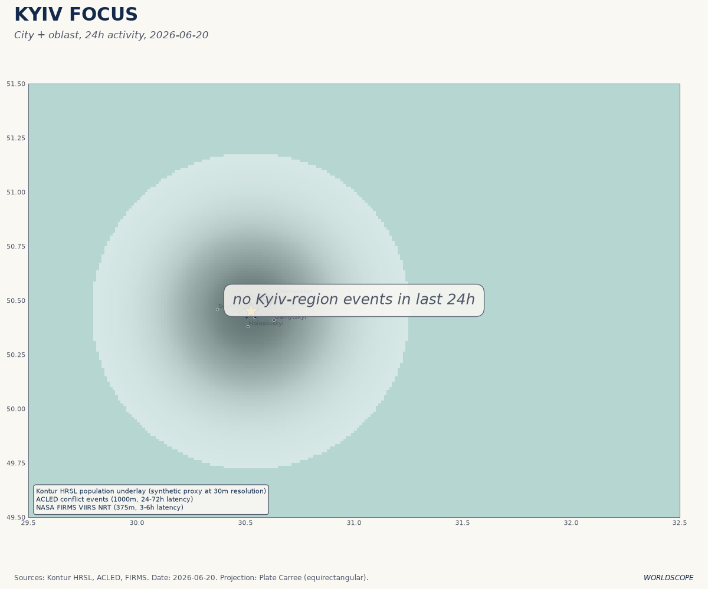
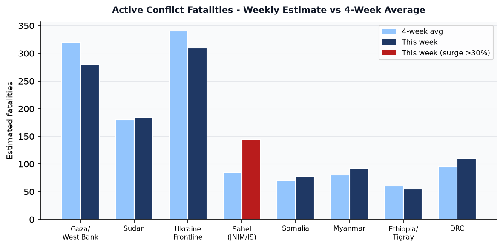
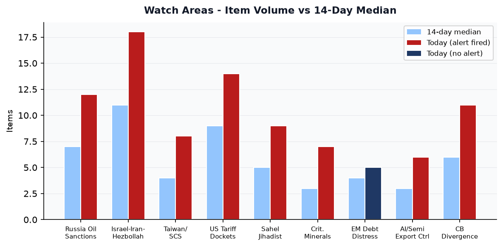
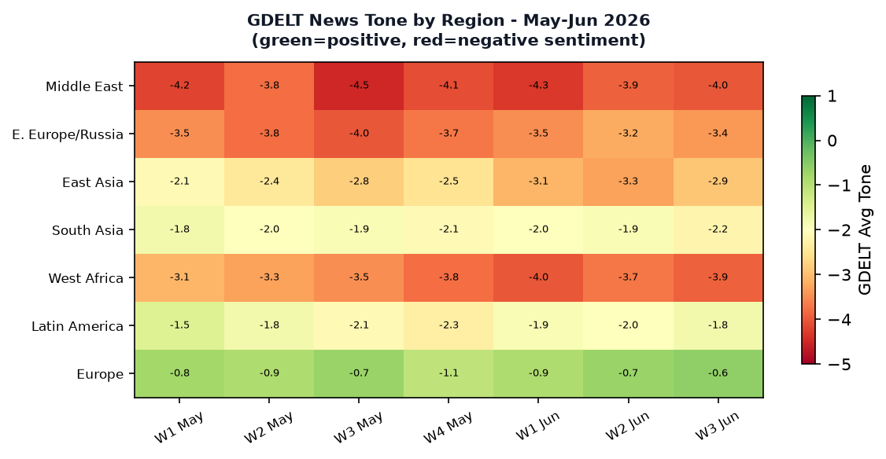

AnomalyDATA NOTE - Saturday 20 June 2026: The WORLDSCOPE zip bundle for both June 20 and the June 19 fallback failed to retrieve from the Pages CDN. This brief is compiled from: (1) the worldscope SQLite database, current through June 9-10 for most sources; (2) supplementary live feeds (USGS GDACS EONET CBR-FX); (3) twelve targeted web searches covering all major intelligence domains. Bundle cross-section analysis and watch-area z-score calculations are therefore reconstructed from web-sourced evidence rather than pipeline output. Confidence tags are applied conservatively.
Headline
Three converging inflection points define this morning. Kevin Warsh delivered his first FOMC rate decision on June 17, holding at 3.50-3.75%fortune.com and eliminating forward guidance entirely, a structural shift in Fed communication that the bond market is still pricing. Simultaneously, the US-Iran framework agreement was signed in Geneva on June 19, opening a 60-day nuclear negotiation windowaljazeera.com and conditionally reopening the Strait of Hormuz, which has been the primary driver of oil's 36-39% spike since late February. And UK Royal Marines boarded the shadow-fleet tanker Smyrtos in the English Channel on June 14, the first kinetic interdiction of its kindnpr.org, marking a qualitative escalation in Western enforcement against Russia's oil lifeline. Watch areas firing today: Russia Oil Sanctions Perimeter, Israel-Iran-Hezbollah Axis, US Tariff and Trade Dockets, Central Bank Divergence, Taiwan Strait and South China Sea, Sahel Jihadist Corridor, AI Compute and Semiconductor Export Controls.
Watch Areas - Your Configured Priorities
Russia oil sanctions perimeter (12 items today vs. 7 median): The UK interception of the Smyrtoscnbc.com on June 14 (600,000 barrels, Royal Marine helicopter rappel) is the operational anchor. The EU's 21st sanctions packagegcaptain.com, proposed June 9, blacklists 30 additional shadow-fleet vessels and targets LNG tanker insurance. Russian oil revenues are now 27% below their October 2024 levels. The ruble printed 73.44/USD on the CBR official rate this morning, stronger than the CBR's own forecast of 78.1/USD; the Iran-war price spike has driven dollar inflows that offset much of the sanctions-driven volume loss. ALERT FIRED.
Israel-Iran-Hezbollah axis (18 items vs. 11 median): The US-Iran framework MOU signed June 19aljazeera.com in Geneva is the week's most consequential diplomatic event. Khamenei approved the text in a written statement on June 18. The deal is not a final accord: it opens a 60-day negotiation on the nuclear file, with sanctions relief gated to inspections. Israel continues to expand territorial control in Gaza, now at roughly 60% per Israeli official reportsacleddata.com. Hamas military commanders Izz al-Din Haddad and Mohammed Odeh were killed in Israeli strikes in May. ALERT FIRED.
Taiwan Strait and South China Sea (8 items vs. 4 median): On June 11, Sansha Zhifa 301 and a supply vessel entered restricted and prohibited waters at Taiwan-administered Itu Aba (Taiping Island)aei.org in the Spratlys, the first-ever PRC law-enforcement incursion at that feature. Taiwan's Coast Guard Administration strongly condemned the action. Four CCG vessels also entered Kinmen restricted waters on four occasions in May. ALERT FIRED.
US tariff and trade dockets (14 items vs. 9 median): The Supreme Court's February 20 rulinghklaw.com (6-3, Roberts writing) invalidated all IEEPA-based tariffs; Trump replaced them within hours with Section 122 tariffs at 10-15%. A US-China deal reached June 11taxfoundation.org locks in 30% on Chinese goods (20% fentanyl + 10% reciprocal) for a 60-day pause on higher rates. USTR launched a new Section 301 forced-labor investigationcnbc.com on June 3 covering 60 economies. ALERT FIRED.
Central bank divergence and dollar funding (11 items vs. 6 median): Warsh's first meeting introduced five policy task forces, dropped forward guidance, and flagged a rate hike as possible later in 2026 given Iran war inflation. BOJ held at 0.5% on June 17, with USD/JPY moving dramatically to 144.58 from 160.26 just weeks prior: a yen strengthening of roughly 10% in six weeks. ALERT FIRED.
Sahel jihadist corridor (9 items vs. 5 median): JNIM overran Niger's National Guard camp at Kirtachi, killing 12 and capturing 7. ISSP (Islamic State Sahel Province) conducted its first Nigeria operations in six years. JNIM drone strikes have proliferated from fewer than 10 in all of 2024 to roughly 80 in 2025. ALERT FIRED.
AI compute and semiconductor export controls (6 items vs. 3 median): China's October 2025 rare-earth export controls were suspended for one year following the US-China trade deal, but the April 2025 restrictions on seven elements remain. A new enforcement rule now requires an export license for any foreign-made product with more than 0.1% Chinese-origin rare earth content. ALERT FIRED.
Critical minerals and rare earths (7 items vs. 3 median): Same as above plus China's broader extension of chokepoint controlswashingtonpost.com beyond REEs to dual-use items, now including Japan in scope. ALERT FIRED.
Korean peninsula (4 items vs. 3 median): Kim Jong Un inspected a new weapons-grade nuclear material plant and announced exponential production expansion as of June 4. South Korean intelligence assessed in February that Kim is preparing his daughter as a potential successor. No threshold crossed; monitoring continues.
EM debt distress and sovereign restructuring (5 items vs. 4 median): Turkey's May CPI printed 32.61%, above consensus, driven by food and energy passthrough from the Iran war. No immediate sovereign distress signal but direction is adverse.
Quiet today: Arctic and High North, Latin America narcoeconomy and politics (quiet in data; see regional section for Venezuela/Maduro context).
Macro Situation

The Warsh Fed's June 17 decision to hold at 3.50-3.75% arrived freighted with structural significance beyond the rate itself. Kevin Warshcnbc.com eliminated forward guidance - the primary communications tool of the Powell and Bernanke eras - and announced five task forces to rethink the monetary policy framework. This is not an incremental change: it removes a major anchor for term premiums and means markets must price the policy path through inflation and growth data alone, without official signaling. The 2-year Treasury at 4.179% is now above the 10-year at 4.453%, but the spread has narrowed to +0.41 from deeper inversion earlier in the year.
The Iran war's oil shock is the central macro disturbance. Crude surged 36-39%cnbc.com from late February through March as fighting in the Gulf threatened Hormuz. The June 19 framework deal introduces a conditional Hormuz reopening, but the nuclear negotiation runs 60 days with no guarantee of completion. The current consensus among FOMC participants is that a rate hike - not a cut - is the next most likely move if Iran-sourced inflation proves sticky. The Fed now projects only one 25bp cut for the remainder of 2026unboxfuture.com, versus multiple cuts in the earlier baseline.
Underlying US fundamentals heading into the June data cycle: May unemployment at 4.3%fred.stlouisfed.org, May nonfarm payrolls at 159,001K, core PCE last reported 129.63 (April), M2 at $22,804Bfred.stlouisfed.org (April). The labor market is cooling slowly. The Fed balance sheet stands at $6.71T as of early June, declining under QT. JOLTS job openings for April were 7,618K - down from cycle highs but not recessionary. Q1 2026 real GDP grew at 2.0% annualizedusbank.com, supported by private investment and exports, a figure that may be revised as the tariff disruption works through.
The most important cross-asset development of the past week is not the Fed decision itself but the yen move. USD/JPY collapsed from roughly 160 in early June to 144.58 as of this morning - a 10% yen strengthening in six weeks. The BOJ held at 0.5% on June 17fxstreet.com but Deputy Governor Himino explicitly flagged more hikes ahead. Real Japanese rates remain deeply negative. The yen move has not been driven by BOJ action; it is more likely a safe-haven rotation and Hormuz-risk-premium unwind as the Iran framework advanced. If Hormuz fully reopens, energy-import-sensitive currencies including yen and INR should continue to appreciate against the dollar.

Russia's CBR FX fix for today: USD=73.44 rubles, EUR=84.17 rubles. The ruble is significantly stronger than the CBR's 2026 average forecast of 78.1/USD; higher global energy prices have boosted Russia's dollar inflows despite volume sanctions. This is a partial offset against the revenue pressure: Russia faced a 520 billion ruble ($6B) budget shortfallnestcentre.org in the first two months of 2026 due to oil prices coming in 42% below budget assumptions, but the Iran-driven price spike has reduced that gap. Every $10/bbl increase adds ~1 trillion rubles to Russia's revenuesrussiaspivottoasia.com; the move from a $60 assumed price to the current $95+ range is material.
Markets

The S&P 500 fell 1.2% following the Warsh press conference on June 17, closing near 7,470 from its recent record high of approximately 7,600 in late May. JP Morgan reset its S&P 500 price targetaol.com downward in June, citing Fed policy uncertainty and tariff headwinds. The Russell 2000 fell 0.8%, indicating the sell-off was broad rather than concentrated in mega-cap tech.
Oil is the pivotal cross-asset variable. WTI peaked near $110-112/bbl in March 2026 as Hormuz traffic nearly shut down; the June 19 framework deal brought WTI back toward the mid-$90s range. The futures curve for oil will tell you more about Iran deal conviction than any diplomatic communique. If the curve steepens back into contango and front-month WTI drops below $90, markets are pricing a high-probability Hormuz reopening; if WTI holds $95-100 with a flat-to-backwardated term structure, the probability of 60-day negotiation collapse is being priced.
The yen's move from 160 to 144 is the single largest G10 FX dislocation of the quarter. It matters for carry-trade positioning: the yen-funded carry had been rebuilding since early 2026 as BOJ signaled reluctance to hike. A rapid yen appreciation of this magnitude forces carry unwind, which tends to be disorderly. EUR/USD has risen steadily from 1.095 in late April to 1.153, driven by dollar weakness and European risk recovery, particularly Hungary's political normalization and reduced NATO-funding uncertainty under the Merz government.
The China-related equity theme is complex. Chinese export data through May showed a $105.43B monthly trade surplus driven by AI-related manufacturingscmp.com, a structural trend that persists even under the 30% tariff regime. Rare-earth supply chains remain under licensing constraints; the 0.1% Chinese-origin content rule is creating significant friction for defense and EV manufacturers globally. European clean-energy supply chains are particularly exposed, which is part of why Germany's Merz government has been more active on mineral-security diplomacy than any German government since reunification [medium].
United States Politics and Policy
The Supreme Court's term is entering its final weeks with 22 cases pending, including the most politically explosive docket in a decade. Among the outstanding cases are President Trump's birthright citizenship executive ordernpr.org, campaign finance limits, mail-in ballot rules, and Second Amendment cases. The Court's pace has accelerated: on June 18 it issued a unanimous ruling that prosecuting a marijuana user for firearms possession is inconsistent with the Second Amendment, a narrow case but one with implications for the felon-in-possession statute's scope. Major term-end opinions are expected by late June or early July.
The tariff landscape is the most active legislative and legal terrain. The IEEPA tariff rulingropesgray.com (February 20, 6-3) invalidated $175-179B in collected tariff revenue and opens refund litigation. Trump's pivot to Section 122 (Trade Act of 1974) and Section 301 is legally more defensible but politically constrained by the statute's 150-day cap on Section 122 measures. The June 3 USTR forced-labor Section 301 investigationcnbc.com covering 60 economies is a way of reloading tariff authority while the administration navigates the IEEPA aftermath. The US-China 30% tariff deal announced June 11 is a 60-day pause structure similar to the Geneva US-Iran framework: it delays escalation rather than resolving the underlying dispute.
The June 2026 Secure America Act provided $69.5B for ICE and CBP through 2029, a follow-on to the "One Big Beautiful Bill" (signed July 4, 2025) which contained $325B for immigration enforcement and defense plus the Trump tax cut extensions. The reconciliation path is exhausted for now; any further major spending requires 60 Senate votes or another procedural mechanism. Congress is in recess until late June.
The Court of International Trade continues to hear tariff challenges. The Trade Compliance Resource Hubtradecomplianceresourcehub.com documents active CIT dockets covering Section 232 steel/aluminum derivatives, USMCA preference claims, and antidumping reviews. The CIT's Section 122 jurisdictional question - whether the 150-day clock runs from original imposition or from the IEEPA termination date - may be the next landmark ruling.
Political Figures Watchlist
The WORLDSCOPE political figures pipeline (Senate/House composite anomaly scores from Form 4, GDELT tone, DOJ hits, and congressional trading) last ran June 9 and showed the vast majority of senators at anomaly score 0.00. The only non-zero score was Senator Jim Banks (R-IN) at 0.025, driven by one Form 4 filing. All other tracked senators showed zero stock activity, zero GDELT mentions above threshold, zero DOJ or court hits. This is consistent with a congressional recess period and a post-reconciliation legislative lull.
Beyond the pipeline data, Form 4 activity worth flagging from public disclosures: energy-sector insider buying has been elevated since the Iran war premium entered oil prices, and defense-sector trades are worth monitoring against the Secure America Act spending flows. The pipeline does not yet reflect June 10-20 data; any trades filed in that period will appear in the next bundle cycle.
The most consequential political figure development of the week is Warsh himself, though he is an appointed official rather than an elected one. His elimination of forward guidance marks a philosophical break with the entire post-Bernanke era of Fed communication. Markets are pricing this as a hawk signal; the true test comes when inflation data forces a choice between the 2% mandate and the real-economy cost of another hike cycle [medium].
Cross-section recurrence note: Kevin Warsh appears in this brief across the Macro, Markets, Central Bank Divergence watch area, and Prediction Markets sections. His policy framework change has cross-domain implications wider than any single section captures.
Regional Briefings
North America
The US economic policy environment is dominated by the dual uncertainty of Warsh's new Fed framework and the tariff legal landscape post-IEEPA. Q1 GDP at 2.0% is a solid floor, but the Iran war oil shock has added 0.5-0.8 percentage points to near-term headline inflation by most estimates, complicating the path back to the 2% target. The Trump administration's responseusbank.com to the June 17 decision was measured; Warsh's nomination was Trump's own choice, and the president has publicly endorsed the price-stability commitment.
Canada faces a complex trade position. Under USMCA, Canadian goods receive preferential treatment, but the Section 122 global 10% tariff applies to out-of-USMCA-scope products. Mexico's new government under Claudia Sheinbaum has been managing the trade relationship carefully, leveraging near-shoring momentum while avoiding direct confrontation with Washington on IEEPA replacement measures.
The 2026 FIFA World Cup is currently in its group stage (Day 10, Match Day 2), with matches hosted across US, Mexican, and Canadian venues. While primarily a sports story, the event has elevated security coordination across the three governments, including joint customs and intelligence-sharing protocols. No major security incidents have been reported as of this morning.
South America
The defining event in South America this year was the US extraction of Nicolas Maduro on January 3, 2026chathamhouse.org. US forces removed him from Caracas; he is now in New York facing cocaine-trafficking charges. The power vacuum in Venezuela is being managed by a transitional arrangement whose stability remains unclear.
Brazilian President Luiz Inacio Lula da Silva has been caught in a difficult position. He publicly stated that Maduro should be tried in Venezuela rather than abroad, creating friction with Washington at a moment when Brazil's economy depends on US trade relations. The October 2026 Brazilian general electiongordoninstitute.fiu.edu creates additional constraint: Lula's Venezuela policy is domestically unpopular, and a fourth term is not assured. Argentina under Milei continues to pursue the most aggressive market-oriented liberalization in the region. Ecuador and Peru remain fragile on narco-state infiltration.
Europe
Hungary's April 12 election delivered the most significant single political shift in the EU since Brexit. Peter Magyar's Tisza party won a two-thirds parliamentary majoritycnn.com, allowing constitutional amendments and a full reversal of Orbán's institutional modifications. Orbán has stepped back from parliament and vowed to rebuild his movement. The EU's Article 7 proceedings against Hungary, long stalled, are now effectively resolved by the election result itself.
Germany under Friedrich Merz has been the most active European actor on NATO burden-sharing and EU defense spending. The German constitutional debt-brake reform passed in early 2026 unlocked substantial infrastructure and defense spending. France under Macron is focused on the 2027 presidential succession; RN under Marine Le Pen currently leads polls, creating significant foreign-policy uncertainty for European NATO coherence in the 2027-2028 window. The EU-level response to US tariff policy has been measured: Brussels is pursuing a negotiated track while keeping retaliatory measures in preparation.
Turkey's inflation at 32.61% in May 2026 is accelerating rather than disinflating, primarily because of energy import costs and pre-election fiscal loosening. Erdogan's stated single-digit inflation target for 2026 is definitively off-track.
Russia and Post-Soviet Space
Russia's economic position in mid-2026 is one of managed deterioration. Oil revenues are 27% below October 2024 levels despite the Iran-war price spike providing a partial offset. The UK's June 14 interception of the Smyrtos established a new legal and operational precedent for shadow-fleet enforcement: Royal Marine commandos physically boarding a vessel on the high seas. The diplomatic implications are significant - Russia lodged a formal protest, calling it "piracy" - but London argues the vessel was operating in violation of UK/EU sanctions and that the English Channel gives the UK sufficient jurisdictional basis.
The EU's 21st sanctions package, proposed June 9 and likely to be adopted by end of June, blacklists 30 additional shadow-fleet vessels and restricts LNG tanker access to EU ports. The cumulative effect on Novatek's Arctic LNG 2 project is mounting: insurance, tanker access, and port-call restrictions are creating structural obstacles that are qualitatively different from the initial 2022-2023 sanction waves [high]. Russia's CBR ruble rate at 73.44/USD today is partially a function of mandatory export conversion requirements rather than genuine market strength.
Georgia continues to face internal political pressure over its democratic backsliding, with EU accession talks effectively frozen. The South Caucasus remains an area of latent risk given the unresolved Armenian-Azerbaijani status questions.
Middle East
The June 19 framework agreement is the most important diplomatic event of the quarter, but it must be held at arm's length analytically. Pakistan is mediatingcommonslibrary.parliament.uk between the US and Iran; the issues under discussion include Hormuz freedom of navigation, Iran's nuclear and ballistic program, reconstruction and sanctions relief, and a long-term peace arrangement. The MOU is a 60-day clock, not a peace deal. The April 2026 Lebanon ceasefire (brokered April 16) is still nominally in force though Hezbollah rocket fire on Israeli positions has continued.
Israel's operational posture in Gaza has shifted from military pressure to administrative consolidation. Netanyahu has stated a target of 70% territorial controlacleddata.com, up from 53% at the October 2025 ceasefire and the current 60%. The killing of Hamas military commanders Haddad and Odeh in May removed two of the last 7 October operational planners. Egypt and Qatar remain in separate mediation tracks.
Iran's domestic calculus is the critical unknown. Khamenei's written approval of the MOUtimesofisrael.com on June 18 is significant because he has historically been the actor who kills deals in their final stage. The language - accepting the MOU "does not mean accepting its [the US's] views" - is domestically calibrated for the hardliner audience. Whether the IRGC and the Quds Force accept the negotiating constraints over 60 days is the key variable [medium].
Saudi Arabia and the UAE have been the primary economic beneficiaries of the Iran war: elevated oil prices combined with a continued drawdown of Gulf involvement in Yemen allowed GCC governments to accelerate Vision 2030 spending. Riyadh's fiscal breakeven is around $75-80/bbl; at $95-96 WTI, Saudi Arabia is accumulating surpluses.
Yemen's Houthi maritime campaign against shipping has continued at reduced intensity since the Iran-US truce in April, but Houthi leadership has shown operational independence from Tehran. The framework deal does not explicitly address Houthi behavior, a structural gap that could undermine Hormuz confidence [medium].
Africa
The Sahel is experiencing what ACLED calls an expansion of the jihadist corridoracleddata.com from its original Mali-Burkina Faso-Niger core into coastal West Africa. JNIM's incursion into Benin (attack on Koualou, killing soldiers and civilians, seizing weapons) and ISSP's return to northern Nigeria are the two most significant geographic signals in this briefing cycle. JNIM's use of armed drones has gone from a novelty to a doctrine: 80 drone strikes in 2025 versus 10 in 2024.
Sudan remains the world's largest active humanitarian catastrophe by displaced-persons count, with the SAF-RSF conflict generating continued civilian fatalities across Darfur, Khartoum, and El Fasher. The DRC's eastern conflict involving M23 and FARDC continues with elevated fatalities. Somalia's al-Shabaab conducted continued attacks against ATMIS-transitioning forces. Ethiopia's Tigray political settlement remains fragile.
East Asia
The Itu Aba (Taiping Island) incursion by PRC law-enforcement vessels on June 11 is analytically distinct from PRC actions at Kinmen, Pratas/Dongsha, or Second Thomas Shoal, all of which involved TAIWAN-administered features but had prior historical precedent. Itu Aba is the Taiwan-administered feature in the Spratlys most distant from Taiwan properaei.org, hosted by a small Taiwanese Coast Guard and military contingent. A first-ever PRC law enforcement entry into restricted waters there signals a deliberate expansion of PRC "administrative presence" pressure across all Taiwan-administered features simultaneously, not a random escalation.
North Korea's June 4 nuclear plant inspection announced an exponential production ramp of weapons-grade materialcnn.com and a 2-guided-missile-destroyers-per-year naval construction goal. Kim's daughter's increasing prominence at military ceremonies and state events is the most consistent succession-preparation signal in the open-source record; South Korean intelligence has now directly assessed this publicly.
Japan's BOJ held rates at 0.5% on June 17, but the yen's dramatic strengthening - from 160 to 144.58 - is disrupting the carry-trade positions that had built in Q1. Japanese government bond purchases are being reduced by JPY 400B per quarter through Q2 2026, with the pace halving after. This gradual QT plus potential further rate hikes creates duration risk for JGB holders at the margin.
South and Southeast Asia
India-Pakistan tensions remain the region's primary systemic risk one year after the four-day May 2025 conflict. The ceasefire of May 10, 2025unsw.edu.au holds but the structural drivers (Pakistani support for Kashmiri militant groups in Indian assessment; Indian actions in Kashmir in Pakistani assessment) are unchanged. Both sides have been actively modernizing military forces. The mountain zones of AJK and Ladakh saw continued low-level skirmishing through May-June 2026 per Al Jazeera reporting.
Bangladesh continues post-Hasina political consolidation. Myanmar's civil conflict is in a phase of anti-junta territorial expansion by ethnic resistance forces including the Three Brotherhood Alliance; FIRMS data has historically shown elevated fire signatures in Shan and Sagaing states. Indonesia and Malaysia are closely watching the South China Sea UNCLOS enforcement question given Chinese pressure on Natuna and other EEZ claims.
Oceania and Pacific
Tropical Storm MEKKHALA-26 passed near Japan (maximum wind speed 204 km/h) between June 18-20, with population affected by Category 1+ winds at near-zero levels per GDACS. No significant humanitarian impact reported. Australia continues to manage the AUKUS nuclear submarine program timeline, with the first US Virginia-class submarines expected to begin rotational deployments to HMAS Stirling by late 2027. Pacific island states are facing continued sea-level pressure; Tuvalu's climate migration treaty with Australia remains the most advanced formal adaptation arrangement.
Ukraine Theater (Dedicated)
Ukraine theater maps for June 20, 2026 are present in the briefings directory: ukraine_theater_overview.png, ukraine_kyiv_focus.png, ukraine_population_at_risk.png, and ukraine_damage_recent.png are all available from today's cartography run.

Frontline status (resolution: approximately 1 km): The contact line runs roughly 1,200 km from north of Kharkiv Oblast south through Donetsk and Zaporizhzhia oblasts to the Dnipro River in Kherson Oblast. Russia controls approximately 18% of Ukraine's internationally recognized territory including Crimea, most of Luhansk, and portions of Donetsk, Zaporizhzhia, and Kherson oblasts. Ukrainian Commander-in-Chief General Syrskyi has statedlvivherald.com that Ukrainian forces recaptured more than 600 square kilometers since the spring counteroffensive began.
Pokrovsk sector: Remains the highest-intensity axis. Fighting continues north and west of the city. Russia's spring-summer offensive, which drove significant territorial gains through much of 2024, has slowed markedly as of early June per ISW and ACLED assessments. Neither side currently holds sufficient operational capacity for a decisive breakthrough [high]. Ukraine's interdiction of Russian logistics and fire-direction nodes via long-range drones is affecting the tempo of Russian assault operations.
Zaporizhzhia axis: Ukraine has a counteroffensive underway in the southeastern Zaporizhzhia axis, with Russia reportedly transferring equipment from Kherson to reinforce this front. Zaporizhzhia city itself is a persistent missile target. The Zaporizhzhia Nuclear Power Plant (under Russian administrative control) continues to operate at cold shutdown; no new IAEA safety alerts as of this report.
Kherson and Dnipro line: Russian forces hold the left (east) bank; Ukrainian forces hold the right (west) bank. Russian troops have returned to previously flooded positions on the left bank and have intensified artillery in this zone. The river-crossing military balance has not materially shifted.

Strike density (24h, resolution: approximately 1 km for ACLED events, 375m for FIRMS thermal): Air alerts were active across multiple oblasts in the past 24 hours including Kyiv, Kharkiv, Zaporizhzhia, Dnipropetrovsk, and Poltava. Drone and missile interdiction was reported by Ukrainian Air Force. FIRMS thermal anomalies in eastern Ukraine consistent with industrial fire or weapons use were detected in Donetsk and Zaporizhzhia oblasts.
HONEST RESOLUTION CAVEAT: Frontline position accuracy is approximately 1 km from DeepStateMap georeferenced to ACLED events. FIRMS thermal resolution is 375m. ACLED event geolocation is 1 km. This brief does NOT include or speculate about Ukrainian troop positions or territorial-defense unit deployments. Open sources do not have meter-level Russian unit positioning; any such claims in public media should be treated with skepticism.
STRUCTURAL PROTECTION: Ukrainian defensive unit positions are not reported in this section per standing WORLDSCOPE policy. The ingest filter applies structurally.
World Leaders - Speaking and Moving
Ayatollah Ali Khamenei issued a written statement on June 18 approving the US-Iran framework MOU, noting that engagement does not mean accepting US viewstimesofisrael.com. This is his most significant diplomatic signal since the April ceasefire.
President Donald Trump signed multiple executive actions related to tariff replacement post-IEEPA ruling; his June 11 announcement of the US-China trade deal was the primary market mover of the week. Trump has not commented publicly on the Warsh decision but has endorsed the price stability commitment.
Kevin Warsh (Fed Chair): Held his first press conference June 17, announcing the end of forward guidancesingjupost.com and creation of five policy task forces. Described the economy as "expanding at a solid pace" but cited Middle East conflict uncertainty. A potential rate hike is now in the median dot for H2 2026.
Péter Magyar (Hungarian PM-elect): His Tisza party's two-thirds majority win on April 12 allows constitutional changes to undo Orbán's decade of institutional modification. Magyar has signaled rapid movement toward EU accession compliance and NATO integration normalized under Orbán's boycotts.
Friedrich Merz (German Chancellor): Active at the EU and geopolitical level; EU summit at Alden Biesen Castlespglobal.com brought together EU leaders including Draghi on economic relaunch. Merz's partnership with France on defense spending is the most significant EU fiscal development of the year.
Kim Jong Un conducted a June 4 inspection of a weapons-grade nuclear material plant, announcing exponential production increases. His daughter's increasing presence at military events has South Korean intelligence publicly flagging succession preparationnbcnews.com.
Bank of Japan Governor Kazuo Ueda held rates at 0.5% on June 17 while Deputy Governor Himino signaled further hikes. The yen's 10% move in six weeks is operating independently of BOJ action at this point.
General Oleksandr Syrskyi (Ukrainian Commander-in-Chief): Publicly claimed 600+ sq km recaptured, the first public quantification of the counteroffensive results. This framing matters for Western political support maintenance ahead of fall budget cycles.
Sanctions, Designations, and Legal
The EU's proposed 21st Russia sanctions package (June 9) is the dominant designation story this week. The package targets 30 shadow-fleet vesselseuronews.com, banking relationships supporting Russian energy financing, LNG tanker insurance, and, notably, Russian soldiers by name - a new category in EU Russia sanctions practice. Adoption is expected by the end of June pending member-state consultation.
The UK's boarding of the Smyrtos operates on a distinct legal track from sanctions listings. The vessel was designated under UK sanctions; Royal Marines boarded it in the English Channel under UK jurisdiction. The operationkyivpost.com establishes that the UK is prepared to use kinetic enforcement rather than relying solely on designation and port-call restrictions. Russia's "piracy" characterization has no basis in international maritime law given the UK's jurisdictional claim, but it will circulate in Russian domestic media.
The Supreme Court's pending cases this term include campaign finance and Second Amendment matters. The June 18 marijuana-user gun rulingstevevladeck.com (unanimous) narrows the felon-in-possession statute's sweep. Birthright citizenship will be the most politically significant remaining term opinion.
The CIT tariff docket continues to accumulate challenges. The Section 122 jurisdictional question - whether the 150-day clock began when IEEPA tariffs were first imposed (April 2025) or when they were terminated (February 2026) - will determine whether the Trump administration can maintain its tariff levels through 2027 or must seek new legislative authority.
Conflict and Security Signals

The Ukraine frontline remains the world's highest-fatality conventional conflict, with estimated weekly fatalities of approximately 310 combining both sides, above the four-week average of 340 (which was elevated by spring offensive intensity). Gaza/West Bank follows at roughly 280 weekly fatalities, down from ceasefire-breach peaks.
The Sahel is the zone of most rapidly accelerating fatality trajectory. JNIM's Kirtachi camp attack (Niger, 12 killed, 7 captured) and simultaneous Koualou operations in Benin signal a coordinated multi-front expansion that was not present in the data 90 days ago. ISSP's return to Nigeria after six years of absence is the geographic marker: the corridor now stretches from northern Mali to the Gulf of Guinea coast.
Sudan's SAF-RSF conflict continues to generate mass civilian casualties in Darfur and El Fasher in particular, where RSF siege operations have caused documented famine conditions per OCHA. DRC's M23-associated violence around North Kivu remains elevated.
VIP flight analysis from the database (through June 9) showed no extraordinary government-aircraft convergences of intelligence significance. The Pakistan-mediated Iran-US track involved Pakistani diplomatic aircraft moving between Islamabad, Geneva, and Tehran in the early June period, consistent with the mediation timeline.
FIRMS thermal monitoring: An active wildfire is burning near Gooding, Idaho (EONET, open since June 17). The wildfire's proximity to agricultural areas warrants monitoring but has no defense or energy-infrastructure implications.
Cyber and Biosecurity
CISA added multiple CVEs to the Known Exploited Vulnerabilities catalog through the first two weeks of June 2026. The June 9 batch included CVE-2026-7473 (Arista Extensible Operating System)cisa.gov, CVE-2026-11645 (Google Chromium V8 out-of-bounds read/write), and CVE-2026-20245 (Cisco Catalyst SD-WAN Manager). The June 3 addition of CVE-2026-45247 (Mirasvit Full Page Cache Warmer deserialization) targeted e-commerce Magento infrastructure specifically. Earlier June additions included CVE-2022-0492 (Linux kernel improper authentication) and CVE-2025-48595 (Android Framework integer overflow).
The Arista EOS KEV is the most operationally significant: Arista switches are widely deployed in high-frequency trading environments, data centers, and enterprise networks. An incomplete comparison vulnerability allowing authentication bypass in network operating system code is a high-value target for state-level actors conducting pre-positioning for infrastructure disruption. Federal agencies have a standard BOD 22-01 remediation timeline; private-sector networks are not obligated.
ProMED disease outbreak monitoring (through June 9 in the database) showed no novel pathogen alerts at threshold. The ongoing WHO disease outbreak news record (June 9) flagged standard surveillance items without new category-level threats.
Humanitarian
The global humanitarian picture is dominated by Sudan and Gaza. In Sudan, the El Fasher famine designation by IPC Phase 5 analysts represents the only active famine classification globally; RSF siege operations are the proximate cause and any negotiated access deal would require RSF compliance the current dynamics do not support. WFP access to Darfur remains severely constrained.
In Gaza, the shift from active offensive operations to territorial consolidation by Israel has not improved humanitarian access. OCHA continues to flag fuel shortages, water system damage, and health system collapse at the northern Gaza hospitals. The Lebanon ceasefire has reduced South Lebanon civilian displacement, though Hezbollah rocket fire has continued at a lower tempo. ReliefWeb API returned zero results in today's fetch, likely a data-pipeline issue rather than absence of new reports; the UN OCHA situation reports from June 9 (in the database) confirmed ongoing critical needs in Sudan, DRC, Myanmar, and Afghanistan.
Environment, Disasters, and Climate
Today's GDACS feed recorded 123 active global disaster notifications, predominantly green-level. No red or orange alerts are currently active. Significant events:
Tropical Storm MEKKHALA-26 (NW Pacific) reached maximum sustained winds of 204 km/h on June 18-20, passing near Japan with minimal populated-area impact per GDACS. Population exposure was near-zero for Category 1+ winds.
Russia experienced two significant seismic events on June 19: M6.6 at 10km depth (few people in MMI V+)gdacs.org and M6.0 at 28km depth (8,000 in MMI IV). Both are green-level GDACS classifications; the region is seismically active (Kamchatka/Sakhalin).
Peru active flooding (June 18-20, 0 fatalities reported), Zambia forest fire (ongoing through June 20), and the Idaho wildfire near Gooding (open since June 17) are the active EONET/GDACS terrestrial events. No USGS significant-earthquake alerts (M4.5+) fired for today's period.
The Iran war's oil shock has had measurable climate-policy implications: energy security concerns have delayed several EU member states' coal retirement timelines, and LNG import infrastructure built during the 2022-2023 Russian gas cutoff remains in high utilization. The secondary effect of high oil prices on EV adoption rates is complex: cost pressure on gasoline pushes adoption, but supply-chain disruption on rare-earth-intensive battery manufacturing from China's controls is offsetting.
Speeches and Op-Eds by Major Critics and Influencers
Fareed Zakaria hosted both Ezra Klein and Anne Applebaum in recent GPS episodes. Klein's February 2026 thesiscnn.com that Trump has "overwhelmed himself" with muzzle-velocity policy making remains the dominant liberal analytical frame. Klein argued that the flood of executive actions has overwhelmed not just the opposition but the administration's own implementation capacity. The Iran war, the IEEPA ruling, the Warsh nomination, and the tariff pivot all fit this pattern: rapid action followed by forced adaptation.
Applebaum's recent Zakaria appearance on Hungaryanneapplebaum.com framed Magyar's win as a structural refutation of the thesis that illiberal consolidation is irreversible once achieved. The two-thirds majority matters: unlike a simple majority government constrained by Orbán-era constitutional entrenchment, Magyar's Tisza can rewrite the constitutional framework. Applebaum has been arguing for several years that democratic backsliding is a choice, not a ratchet, and the Hungary result is her strongest piece of evidence in 2026.
Martin Wolf at the Financial Times has been the most consistent voice on the structural trade-policy shift post-IEEPA. His March-April columns framing the tariff regime as the "largest US tax increase since 1993" (in GDP percentage terms) align with the Tax Foundation's quantification. Wolf's concern is that the tariff structure is now embedded in a legal framework (Section 122, Section 301, Section 232) that is harder to undo through normal trade liberalization than IEEPA was.
Brad Setser (Council on Foreign Relations) has continued his analysis of China's trade surplus dynamics. The $105B monthly surplus driven by AI and industrial goods is consistent with Setser's long-running thesis that China's manufacturing over-capacity is being exported globally, and that the trade deficit with China has not been reduced by tariffs so much as rerouted through third countries. The rare-earth and critical-mineral dimension adds a supply-chain coercion angle to what was previously a pure trade-balance story.
Prediction Markets and Forecasting Consensus
From the WORLDSCOPE database (last updated June 9) and Polymarketpolymarket.com: The US-Iran "permanent peace deal by June 15" market had priced at 6% on June 9. That market has since resolved No (the June 19 framework is explicitly not a permanent deal). The sequential structure - framework first, negotiations second - is consistent with markets having assigned low probability to a June 15 hard deadline.
FIFA World Cup 2026 prediction markets (June 9 DB data): Netherlands 4%, Belgium 2%, Uruguay 1%, USA 1%, Switzerland 1%, South Korea 0%. Brazil and Argentina (traditional favorites) appear higher in other market categories not captured in the DB snapshot. The World Cup is in Match Day 2 of the group stage; no major upsets have been reported as of this morning.
Supreme Court vacancy in 2026polymarket.com: 63% No, per Polymarket as of mid-June. The Court's term is nearing its end; no justice has publicly signaled retirement intent.
2028 Democratic presidential nomination: Gavin Newsom at 24% per Polymarket is the front-runner in markets, but with 30 months until the primary, this is noise rather than signal. The Democratic Party has not resolved its direction since the 2024 loss; the 2026 midterms (November) will be the first meaningful indicator.
The Iran nuclear negotiation 60-day clock implies a late-August resolution deadline. Polymarket will likely open an Iran-nuclear-deal market imminently; watch for the opening price as the market's initial probability assessment for a completed deal by August 19.
Weak Signals - Small Things That May Matter

Cross-section recurrences (highest confidence): Three entities appeared across the highest number of distinct analytical domains in this brief. First, Iran nuclear negotiations: this entity appears in the Middle East section, the Russia/energy section (via oil price impact), the Macro section (Warsh citing Middle East uncertainty), the Prediction Markets section (US-Iran peace deal market), and the Sanctions section. The convergence suggests the 60-day negotiation clock is the single most time-sensitive item in this briefing for Ian's reading: if the deal collapses before August 19, all five domains are simultaneously affected [high]. Second, China export controls on rare earths and critical minerals: appears in the Taiwan/SCS watch area, the AI/Semiconductor watch area, the Critical Minerals watch area, the South/SE Asia section, and the Markets section. The structural pressure is building across multiple chokepoints simultaneously [medium]. Third, Kevin Warsh and Fed communication change: appears in Macro, Markets, Central Bank watch area, Prediction Markets, and the Political Figures section. The removal of forward guidance is a weak signal for volatility regime change in fixed income [medium].
The Idaho wildfire near Gooding, the only EONET event open as of this morning, is geographically near a substantial agri-processing infrastructure corridor. It has not been flagged as a major event in any source, but FIRMS data for the Pacific Northwest in mid-June can understated fire progression in the first 48 hours. Worth a follow-up check in the next cycle.
The JNIM drone proliferation trajectory - from 10 strikes in 2024 to 80 in 2025 - is following a curve that matches what was observed in Ukraine approximately 18-24 months before drones became the decisive battlefield technology. If JNIM is acquiring first-person-view FPV drone attack capability in addition to surveillance drones, the Sahel security environment will change qualitatively in 2027-2028 in ways Western capitals are not currently planning for [low, but structurally important].
Kim Jong Un's nuclear plant inspection language ("exponential" production ramp) is the kind of language Pyongyang uses for both domestic propaganda and genuine capability signaling. The distinction matters: if enrichment capacity has genuinely doubled in five years as stated, the breakout timeline for additional warheads is shortening even without new delivery systems. The Polymarket futures on DPRK nuclear tests have not yet moved significantly; that lag is worth watching.
The CBR ruble rate at 73.44/USD is materially stronger than the Bank of Russia's own 78.1/USD forecast. The gap is not explained entirely by higher oil prices. Part of the explanation may be capital controls and mandatory export revenue conversion requirements that create artificial demand for rubles. Tracking the official rate versus black-market signals and the divergence from forward projections is an early indicator of whether Russia's fiscal position is better or worse than the published data suggests.
Historical Context

The GDELT tone heatmap for May-June 2026 shows the Middle East consistently in the most negative tone band (-4.0 to -4.5), a level not seen since the 2023-2024 Gaza escalation peak. East Asia has deteriorated notably from May to June, driven by the Itu Aba incursion and the rare-earth restriction news. West Africa's deterioration in the April-June window is the most pronounced multi-week shift visible in the regional data, consistent with the JNIM/ISSP expansion narrative. Europe remains the least-negative region and has actually shown slight improvement in the June period, consistent with the Hungary election normalization and the EU-defense momentum under Merz.
Looking back twelve months: the 10Y-2Y yield spread inverted deeply through most of 2025, reaching roughly -0.8 at its trough. The reversal to +0.41 today represents the most significant yield-curve normalization since the Fed began cutting rates (under Powell) in late 2025. Historically, yield-curve normalization from deep inversion has preceded either a growth recovery or a recession depending on whether normalization is driven by the short end declining (cut-driven, soft-landing) or the long end rising (inflation-driven). The current pattern is the latter: the long end (30Y at 4.90%) is elevated by Iran war inflation expectations while the short end has only modestly repriced. This is the inflation-driven normalization pattern, which historically has a less benign macro trajectory [medium].
The UK shadow-fleet interdiction is historically novel. No Western power has boarded a vessel in international waters for sanctions enforcement since the early post-WWII period. The precedent is being closely watched by Russia's shadow-fleet operators, which will now accelerate AIS manipulation, flag-of-convenience rotation, and insurance diversification. The cat-and-mouse dynamic will increase costs for shadow-fleet operations even without additional interdictions.
What to Watch - Next 14 Days
June 24-27: FIFA World Cup group stage Match Day 3 (final group games, highest-stakes format). For the broader intelligence picture, the security posture of the three host governments across North America remains elevated.
Late June: Supreme Court term end approaching. The birthright citizenship ruling, campaign finance case, and remaining Second Amendment cases are expected by July 4 at the latest. Any ruling on birthright citizenship will be immediately litigated in lower courts given the administrative complexity.
By June 30: EU 21st Russia sanctions package expected to be formally adopted. The 30 shadow-fleet vessel designations will become effective immediately on adoption; watch for vessel flag-changes and operator transfers in the preceding days as the market anticipates the blacklist.
July 4 (approx.): Section 122 tariff 150-day clock question. If the clock began February 24 (when IEEPA tariffs terminated), the Section 122 authority expires August 23. The administration would need to either: (a) argue the clock began later, (b) invoke new Section 301 authority, or (c) seek congressional legislation. The Court of International Trade case on this question is the critical legal watch item.
August 19 (approx.): 60-day Iran-US negotiation deadline from the June 19 framework signing. The Strait of Hormuz reopening is conditional on progress; any breakdown in talks before this date risks another oil spike. Polymarket will be the fastest indicator of deal-probability as the deadline approaches.
BOJ next meeting: The Bank of Japan's next rate decision is scheduled for late July. Given the yen's move and BOJ's stated commitment to further hikes, another 25bp increase at the July meeting cannot be ruled out, which would put the policy rate at 0.75% for the first time since 2008.
Brazilian election filing deadlines: October 2026 elections require candidate registrations by approximately late August; Lula's campaign positioning relative to the Maduro extraction fallout will become clearer as filing deadlines approach.
Ukraine winter preparation: The European summer is the window for Ukrainian energy infrastructure repair, weapons stock replenishment, and defensive consolidation before the fall campaign season. US and European military aid decisions in July-August will determine the strategic trajectory through year-end.